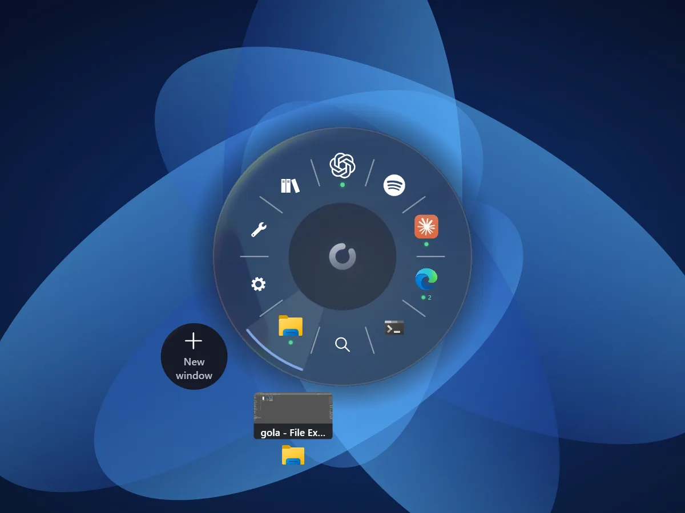

It switches. It doesn't relaunch.
The taskbar often opens a fresh empty window while your work sits behind it. Gola shows what is already open, with a green dot on anything running and a count of its windows, and takes you straight back to the one you meant. New window is there for when you do want one.
